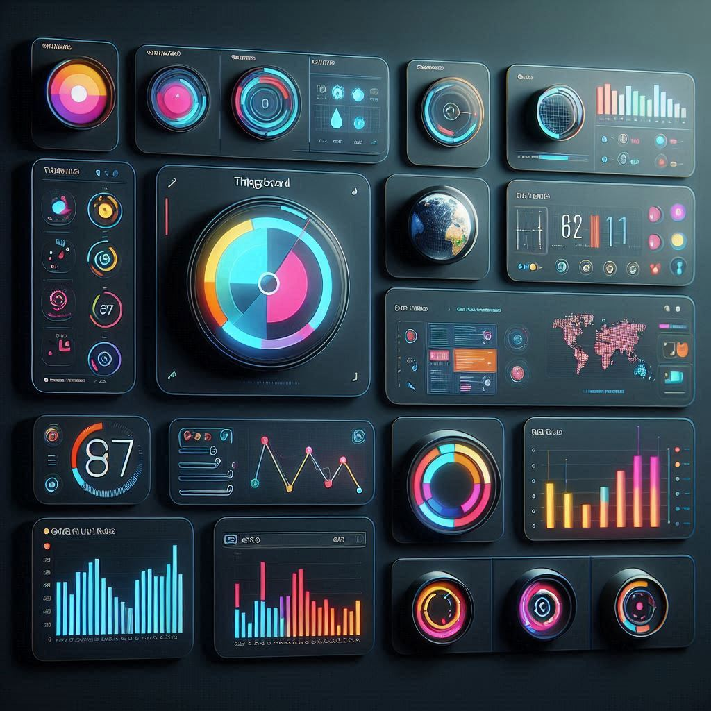

BI in a Box
End-to-end Business Intelligence platform that turns raw data from ERP systems and databases into insights via dashboards, reporting and time-series forecasting.
Athens, Greece
I'm a passionate Software Engineer
I am a passionate technology enthusiast who thrives on exploring new technological advancements, programming languages and innovative tools. I am eager to leverage my skills to contribute effectively to dynamic projects, and I excel at generating creative ideas that drive solutions and foster growth.
02Selected work
AI, Telecom, Web and Simulation.
All projects
End-to-end Business Intelligence platform that turns raw data from ERP systems and databases into insights via dashboards, reporting and time-series forecasting.

Digital ordering, SIM activation and onboarding of Cosmote prepaid products across app and site touchpoints, plus the Manage SIM user journey in Siebel Open UI.

IoT platform for data collection, processing, visualization and device management, using MQTT, CoAP and HTTP, with scalability, fault-tolerance and performance.
Simulation of a production line that tracks machine stops across RUN, STANDBY and STOP states to identify problems and optimize production performance indicators.
03Skills
04Experience
07/2022 – present
Cognity · Athens, Greece
02/2022 – 06/2022
INDUST Systems · Patras, Greece
05Testimonials
Nikos has demonstrated exceptional academic prowess, critical thinking, and a genuine passion for learning. Their contributions to class discussions and group projects have been consistently insightful and impactful. He is a dedicated and driven individual, and I am confident they will excel in their future endeavors.
I have witnessed Nikos' exceptional talent, dedication, and innovative thinking firsthand. Their contributions have been invaluable, consistently delivering outstanding results and driving our projects forward. His professionalism and teamwork make him an asset to any organization. He is an essential asset for a company.
It has been a pleasure working with Nikos on our team. His dedication, problem-solving skills, and collaborative spirit have significantly contributed to our success. Nikos consistently delivers high-quality work and goes above and beyond to support the team. He is an invaluable asset that any company would be fortunate to have.
Working alongside Nikos has been a truly rewarding experience. His creativity and strong work ethic have influenced the success of our projects. He is always willing to lend a helping hand and consistently brings positive energy to the team. His professionalism and dedication spirit are exemplary. I highly recommend him for any future collaboration.
I’ve had the pleasure of collaborating with Nikos on multiple projects. He is an innovative person with a proactive approach and strong work dedication. He significantly contributed to his team's achievements. Nikos excels under pressure and consistently meets deadlines with impressive results.
Have a project, an idea or just want to say hi? My inbox is open.